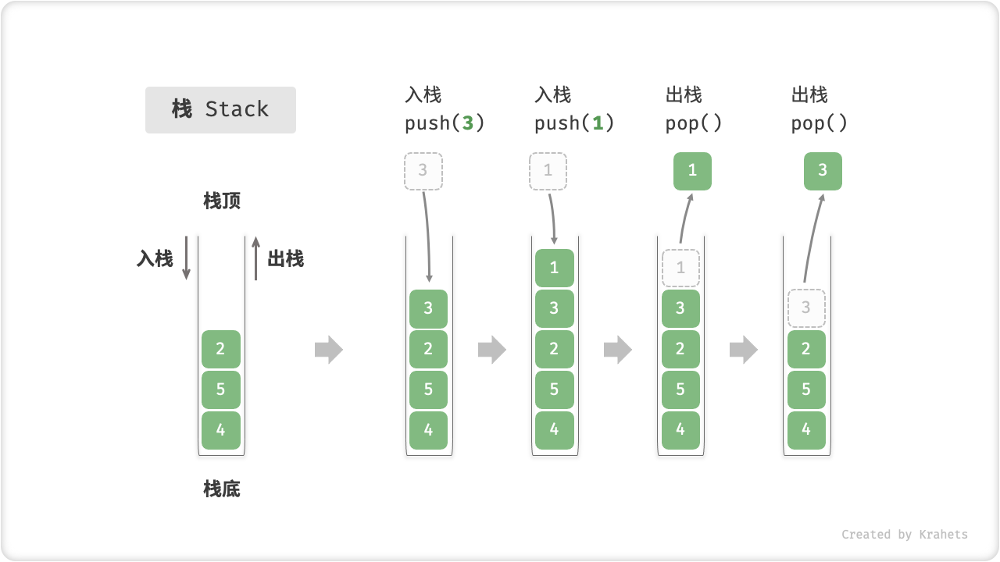

栈¶
「栈 Stack」是一种遵循「先入后出 first in, last out」数据操作规则的线性数据结构。我们可以将栈类比为放在桌面上的一摞盘子，如果需要拿出底部的盘子，则需要先将上面的盘子依次取出。
我们将顶部盘子称为「栈顶」，底部盘子称为「栈底」，将把元素添加到栈顶的操作称为「入栈」，将删除栈顶元素的操作称为「出栈」。

Fig. 栈的先入后出特性
栈常用操作¶
栈的常用操作见下表，方法名需根据编程语言设定来具体确定。
Table. 栈的常用操作
| 方法 | 描述 |
|---|---|
| push() | 元素入栈（添加至栈顶） |
| pop() | 栈顶元素出栈 |
| peek() | 访问栈顶元素 |
| size() | 获取栈的长度 |
| isEmpty() | 判断栈是否为空 |
我们可以直接使用编程语言实现好的栈类。
/* 初始化栈 */
Stack<Integer> stack = new Stack<>();
/* 元素入栈 */
stack.push(1);
stack.push(3);
stack.push(2);
stack.push(5);
stack.push(4);
System.out.println("栈 stack = " + stack);
/* 访问栈顶元素 */
int peek = stack.peek();
System.out.println("栈顶元素 peek = " + peek);
/* 元素出栈 */
int pop = stack.pop();
System.out.println("出栈元素 pop = " + pop + "，出栈后 stack = " + stack);
/* 获取栈的长度 */
int size = stack.size();
System.out.println("栈的长度 size = " + size);
/* 判断是否为空 */
boolean isEmpty = stack.isEmpty();
栈的实现¶
为了更加清晰地了解栈的运行机制，接下来我们来自己动手实现一个栈类。
栈规定元素是先入后出的，因此我们只能在栈顶添加或删除元素。然而，数组或链表都可以在任意位置添加删除元素，因此 栈可被看作是一种受约束的数组或链表。换言之，我们可以 “屏蔽” 数组或链表的部分无关操作，使之对外的表现逻辑符合栈的规定即可。
基于链表的实现¶
使用「链表」实现栈时，将链表的尾结点看作栈顶即可。
受益于链表的离散存储方式，栈的扩容更加灵活，删除元素的内存也会被系统自动回收；缺点是无法像数组一样高效地随机访问，并且由于链表结点需存储指针，导致单个元素占用空间更大。
/* 基于链表实现的栈 */
class LinkedListStack {
LinkedList<Integer> list;
public LinkedListStack() {
// 初始化链表
list = new LinkedList<>();
}
/* 获取栈的长度 */
public int size() {
return list.size();
}
/* 判断栈是否为空 */
public boolean isEmpty() {
return size() == 0;
}
/* 入栈 */
public void push(int num) {
list.addLast(num);
}
/* 出栈 */
public int pop() {
return list.removeLast();
}
/* 访问栈顶元素 */
public int peek() {
return list.getLast();
}
}
基于数组的实现¶
使用「数组」实现栈时，将数组的尾部当作栈顶。准确地说，我们需要使用「列表」，因为入栈的元素可能是源源不断的，因此使用动态数组可以方便扩容。
基于数组实现的栈，优点是支持随机访问，缺点是会造成一定的空间浪费，因为列表的容量始终 \(\geq\) 元素数量。
/* 基于数组实现的栈 */
class ArrayStack {
List<Integer> list;
public ArrayStack() {
// 初始化列表（动态数组）
list = new ArrayList<>();
}
/* 获取栈的长度 */
public int size() {
return list.size();
}
/* 判断栈是否为空 */
public boolean isEmpty() {
return size() == 0;
}
/* 入栈 */
public void push(int num) {
list.add(num);
}
/* 出栈 */
public int pop() {
return list.remove(size() - 1);
}
/* 访问栈顶元素 */
public int peek() {
return list.get(size() - 1);
}
/* 访问索引 index 处元素 */
public int get(int index) {
return list.get(index);
}
}
Tip
实际编程中，我们一般直接将 ArrayList 或 LinkedList 当作「栈」来使用。我们仅需通过脑补来屏蔽无关操作，而不用专门去包装它。
栈典型应用¶
-
浏览器中的后退与前进、软件中的撤销与反撤销。 每当我们打开新的网页，浏览器就讲上一个网页执行入栈，这样我们就可以通过「后退」操作来回到上一页面，后退操作实际上是在执行出栈。如果要同时支持后退和前进，那么则需要两个栈来配合实现。
-
程序内存管理。 每当调用函数时，系统就会站栈顶添加一个栈帧，用来记录函数的上下文信息。在递归函数中，向下递推会不断执行入栈，向上回溯阶段时出栈。